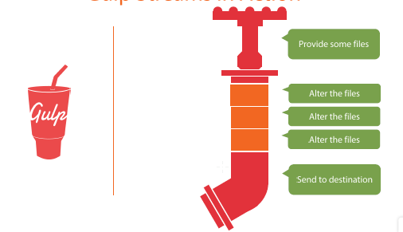
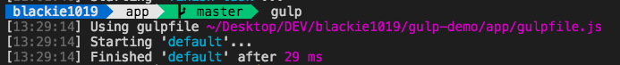
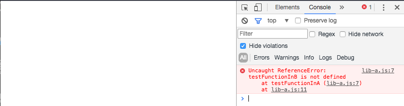

介紹Gulp套件與展示一個網頁最佳化的demo，並且透過concat的套件解決兩個獨立的js檔案但有循環參考的解法
Gulp的介紹與使用情境
一般我們在做前端開發的時候都會遇到需要做一系列的”工作“達到前端資源最佳化的處理，避免有多於的請求去拿過多過大或是為最佳化處理的檔案．Gulp就是一個為了解決這樣問題而產生的npm 套件．
Gulp本身實做了一個很簡單的機制去把我們指定資源(source resource)透過串流(streaming)的方式處理到指定位置(output destination)．

Gulp包含以下特色：
- Automation - 可以幫你建置可重複執行的指令去達成繁瑣的開發/發佈流程(development workflow).
- Platform-agnostic - 主要的IDE 包含不同的平台： PHP, .NET, Node.js, Java 都有支援的套件.
- Strong Ecosystem - 以js開發並可以直接引用js的package增加你的應用.
- Simple - 提供介面街口讓你可以簡單的呼叫gulp參數.
Setup
Install Nodejs
exec cmd to install Gulp CLI
npm install gulp -g
Basic Gulp using
一個簡單的gulpfile.js架構如下：
var gulp = require('gulp');
var del = require('del');
gulp.task('default', function() {
return del([ 'public/*']);
});這邊如果我們在cmd執行gulp指令就可以清除public資料夾內的所有資料，而這邊我們是使用del這個gulp套件來幫我們處理中間的過程．

Make Task Execute by Sequence
接下來，如果我們今天的情境是要有兩個task，如：
- 先清空資料
- 將指定檔案移入該資料夾
var gulp = require('gulp');
var del = require('del');
gulp.task('clean', function() {
return del([ 'public/*']);
});
gulp.task('default', ['clean'], function(){
return gulp.src('src/index.html').pipe(gulp.dest('dist'));
});這邊我們可以看到我們在原本的指令重新命名為clean後，將它放入default這個工作的第二個參數內，這邊第二個參數裡面的放入的task名稱會在default執行前，先並行裡面的工作，做完才執行default內的工作．
可想像到的如果第二個參數內有多個工作，在Gulp原先的設計依照javascipt語言的特性我們無法控制它的先後順序，這在實務上會很不方便．而這邊特別介紹run-sequence這套件可以建立js有相依性的系列工作，協助我們解決在有必要依序執行的工作上做更彈性的設置．當我們引入後上面程式碼就可以做下面修改：
var gulp = require('gulp');
var del = require('del');
var runSequence = require('run-sequence');
gulp.task('clean', function() {
return del(['public/*']);
});
gulp.task('copy-js', function() {
return gulp.src([
'src/js/utils.js',
'src/js/index.js'
])
.pipe(gulp.dest('public/js/'));
});
gulp.task('default', function(){
runSequence('clean','copy-js');
});針對run-sequence的更多細節可以參考先前另外一篇的Gulp run-sequence - Run a Series of Dependent Gulp Tasks in Order
JS Bundle with Gulp
而實務上我們會遇到要幫前端做最佳化的案例，這邊我們就可以用gulp-concat,gulp-uglify與gulp-clean-css來依序幫我們達到js,css檔案合併與js,css的壓縮最佳化．
var gulp = require('gulp');
var del = require('del');
var runSequence = require('run-sequence');
var uglify = require('gulp-uglify');
var cleanCSS = require('gulp-clean-css');
var concat = require('gulp-concat');
gulp.task('clean', function() {
return del(['public/*']);
});
gulp.task('copy-js', function() {
return gulp.src([
'src/js/utils.js',
'src/js/index.js'
])
.pipe(gulp.dest('public/js/'));
});
gulp.task('concat-js', function() {
return gulp.src([
'public/js/utils.js',
'public/js/index.js'
])
.pipe(concat('all.js'))
.pipe(gulp.dest('public/js/'));
});
gulp.task('minify-js', function() {
return gulp.src('public/js/app.js')
.pipe(uglify())
.pipe(gulp.dest('public/app.min.js'));
});
gulp.task('copy-css', function() {
return gulp.src([
'src/css/style.css',
'src/css/index.css'
])
.pipe(gulp.dest('public/css/'));
})
gulp.task('concat-css', function() {
return gulp.src([
'public/css/style.css',
'public/css/index.css'
])
.pipe(concat('app.css'))
.pipe(gulp.dest('public/css/'));
});
gulp.task('minify-css', function() {
return gulp.src('public/css/app.css')
.pipe(cleanCSS({
debug: true
}, function(details) {
console.log(`${details.name}:[${Math.round(details.stats.efficiency *100)}%]${details.stats.originalSize}=>${details.stats.minifiedSize}`);
}))
.pipe(gulp.dest('public/app.min.css'));
})
gulp.task('default', function(){
runSequence('clean',['copy-js','copy-css'],['concat-js','concat-css'],['minify-js','minify-css']);
});這邊我們刻意在執行minify-css的task時將執行時間印出來．而runSequence這邊我們可以分成下面幾個動作：
- 清空資料夾
- 搬移js, css檔案
- 合併產生app.js, app.css檔案
- 最佳化產生app.min.js, app.min.css檔案
Demo : Solving JS File Cycling Refence Problem
而今天實務上有一個範例，情境如下：
某一html有引入兩個js檔案，但兩個檔案內彼此在執行上會互相呼叫對方寫好的function(cycling reference)，參考如下:
index.html:
<!DOCTYPE html>
<html lang="en">
<head>
<meta charset="UTF-8">
<meta name="viewport" content="width=device-width, initial-scale=1.0">
<meta http-equiv="X-UA-Compatible" content="ie=edge">
<title>Document</title>
<!-- build:jquery -->
<script src="vendor/jquery-1.7.1.min.js"></script>
<!-- endbuild -->
</head>
<body>
<div id="output-div">
</div>
<!-- build:js -->
<script src="js/lib-a.js"></script>
<script src="js/lib-b.js"></script>
<!-- endbuild -->
</body>
</html>lib-a.js：
function printMsg(msg){
$("#output-div").html(msg);
console.log("output:"+msg);
}
function testFunctionInA(msg){
testFunctionInB(msg);
}
// document.addEventListener("DOMContentLoaded", function() {
testFunctionInA("Hi I am Blackie");
// });lib-b.js：
function testFunctionInB(msg){
printMsg(msg);
}這邊我們可以很清楚的看到當兩個檔案依序從body被載入時，如果lib-b.js在lib-a.js之後才被載入會有以下錯誤：

今天如果我們使用傳統的資源載入方式無法解決這種functionA=>functionB=>functionA的問題，因為這就跟雞生蛋還是蛋生雞的問題一樣無解．
但如果我們使用上幾步驟介紹到的bundle作法，則可以幫我們把檔案合併至單一檔案內，自然這樣的問題就可以被處理了．

如果對上面這個案例有興趣的朋友可以參考原始碼
通常這種問題是比較早開發的js才會有的，現在的js開發強調模組化與封裝，所以我們應該多利用這樣的特性避開這個問題．